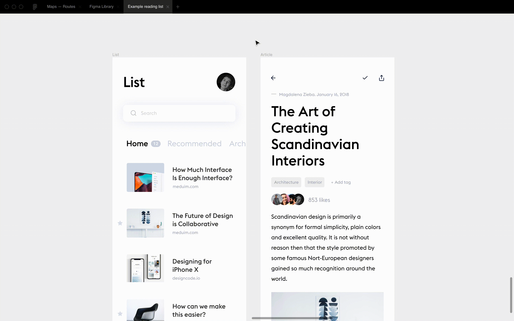
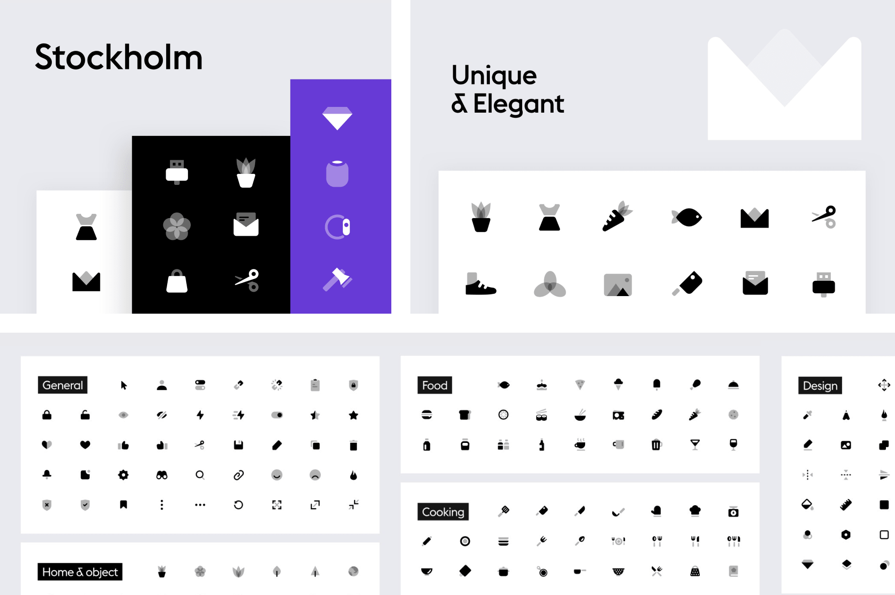
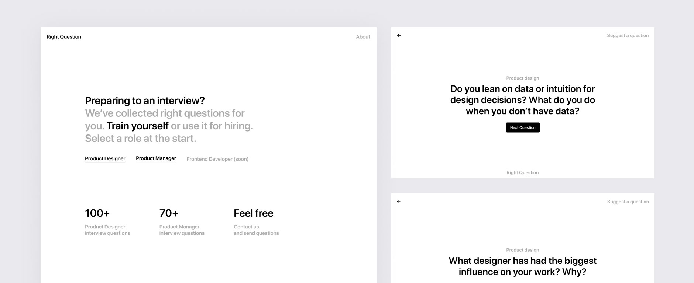
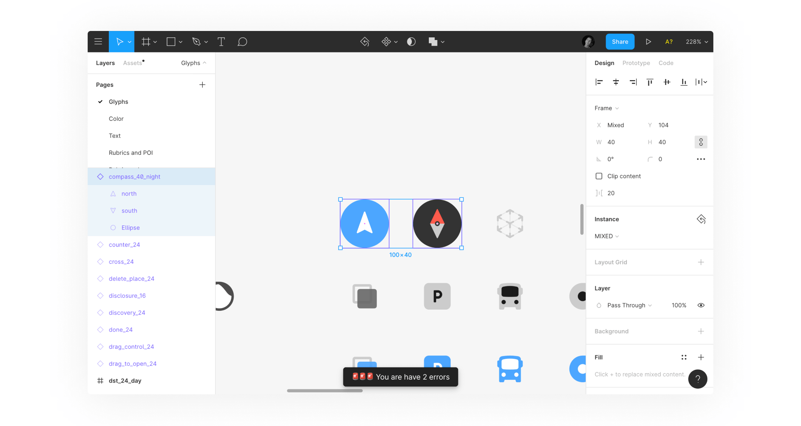

I love to build useful things.
Appearance Figma Plugin
I created a Figma plugin that generates a dark or light mode from a selection. It works with external library styles and local styles.
The plugin has more than 20,000 installs. Open in Figma Community →

Stockholm Icon Set
Stockholm is a set of 640 high-quality vector duotone icons built on a 24 × 24 pixel grid. Thousands of designers use it around the world.

Right Question
A service for preparing for product design and product management interviews. It contains questions collected from interviews at companies such as Apple, Google and Facebook.

Check the Library
A Figma plugin that validates layer names, sorts layers, and checks the balance between day and night objects.

Other Figma plugins
Find Duplicates selects frames, components, and instances with duplicate names. Find Hidden Layers finds and selects every hidden layer on a page.